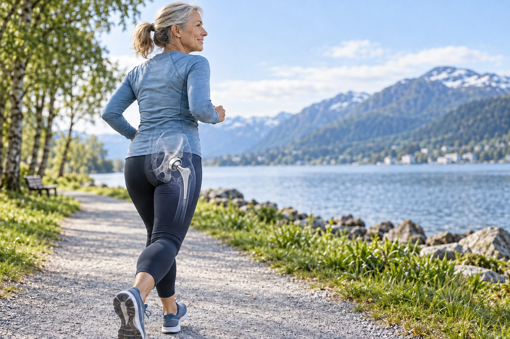

Clinical insights
Active With a Hip Replacement – How Cautious Do You Need to Be?
Many people are encouraged to be active after hip replacement yet remain afraid of “wearing out” the implant. New Norwegian registry research offers reassurance: high activity was not associated with a greater risk of revision for aseptic loosening.

Old advice meets modern implants
Cautious advice once made sense. Older polyethylene bearings could produce more wear particles, and heavy use was linked to osteolysis and loosening. Modern implants commonly use highly cross-linked polyethylene, which wears far less. When materials change, recommendations should be tested against contemporary evidence.
A large analysis of modern hip replacements included almost 1.9 million implants from eight national registries. Revision-free survival was 93.6% at 20 years, with the model estimating 92.1% at 30 years. The 30-year figure is an extrapolation rather than direct 30-year observation of every implant, but it illustrates how durability has improved.
What did the Norwegian study find?
Jakob Vangen Nordbø and colleagues used the Norwegian Arthroplasty Register to identify people aged 40–75 who received a hip replacement with highly cross-linked polyethylene between 2005 and 2012. At a mean follow-up of 9.1 years, they compared 77 people revised for aseptic loosening with 429 whose original implant remained in place.
Participants recalled their highest activity level after surgery. Those who underwent revision did not report greater activity. Their median UCLA activity score was actually lower: 7 compared with 8. In adjusted analysis, higher activity was associated with lower odds of revision. The correct conclusion is not that exercise has been proven to protect the implant, but that this study found no evidence that high activity increased loosening risk.
Why association is not causation
This was a retrospective observational study. Activity was recalled years later, response rates were 44% among revision cases and 50% among controls, and people with early implant problems may have become less active because their hip was already functioning poorly. The study therefore cannot show that activity prevents loosening.
It does challenge an important fear: in this group, with modern polyethylene and long follow-up, high activity did not characterise those who required revision. A 2024 systematic review similarly found that highly active patients generally had similar or better implant survivorship than less active patients, while calling for stronger prospective studies.
Activity is more than load on an implant
Physical activity builds strength, balance, fitness and bone health. It may support independence, participation and quality of life. In another Norwegian study, Nordbø and colleagues found that people with hip replacements were actually more active than a large population comparison group almost ten years after surgery. That does not fit a narrative in which life must become smaller after joint replacement.
At the same time, “be as active as you want” does not mean “everything suits everyone immediately”. A meta-analysis found that about 85% returned to sport, but return was more common for low-intensity than high-intensity activities. An umbrella review supports gradual return to walking, cycling and hiking, while running, contact sport and activities with greater impact or injury risk warrant individual discussion.
Guidance should build confidence – and remain precise
Advice should account for time since surgery, the surgeon's restrictions, implant and fixation type, prior experience with the activity, strength, balance, bone quality, fall risk and other health conditions. Someone returning to running, downhill skiing or tennis needs a different progression from someone aiming to walk, play with grandchildren or manage daily life independently.
Loading should progress gradually and be judged against function and the response afterwards. New deep pain, persistent rest pain, a sense of instability, sudden loss of function, a fall or fever should not simply be “trained through”. The cause needs assessment, sometimes including radiographs, blood tests or orthopaedic review.
How I approach it
I begin with your goal and review the operation, recovery and advice you have received. I then assess pain, mobility, strength, gait, balance and load tolerance, distinguishing an expected training response from signs that require further investigation. The plan is built in stages, with specific goals and systematic follow-up. My starting point is that a hip replacement should create more life, not more fear, while guidance remains individual and changes when progress does not follow the expected course.
Sources
- Nordbø JV et al. “Physical activity and the risk of aseptic loosening after total hip arthroplasty: a case–control study from the Norwegian Arthroplasty Register”. BMC Musculoskeletal Disorders. 2025. Main source. Source.
- Akershus University Hospital. “Liten grunn til å begrense treningen etter hofteoperasjon”. 2026. Norwegian background source. Source.
- Pentland V et al. “Survivorship of modern total hip replacement to 30 years: systematic review, meta-analysis, and extrapolation of global joint registry data”. The Lancet. 2026. Source.
- Telang S et al. “Are Activity Restrictions Necessary After Total Hip Arthroplasty: A Systematic Review”. Arthroplasty Today. 2024. Source.
- Sowers CB et al. “Return to Sports After Total Hip Arthroplasty: An Umbrella Review for Consensus Guidelines”. American Journal of Sports Medicine. 2023. Source.
- Pasqualini I et al. “Return to Sports and Return to Work After Total Hip Arthroplasty: A Systematic Review and Meta-analysis”. JBJS Reviews. 2023. Source.
- Nordbø JV et al. “Patients with total hip arthroplasty were more physically active 9.6 years after surgery”. Acta Orthopaedica. 2024. Source.
- Streck LE et al. “Activity Following Total Hip Arthroplasty: Which Patients Are Active, and Is Being Active Safe?”. Journal of Clinical Medicine. 2023. Source.
Topics
- Hip replacement
- Exercise after hip surgery
- Physical activity
- Aseptic loosening
- Rehabilitation